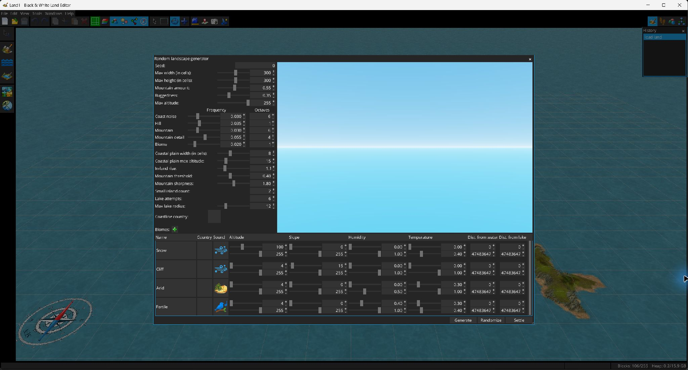

Diese Fenster stellen Inspektions-, Generierungs- und niedrigstufige Ressourcen bereit, die vom Editor verwendet werden.

erzeugt prozedurales Gelände aus Seed, Breite/Höhe, Höhe, Frequenz/Oktaven, Küstenrauschen, Anstieg im Landesinneren, Küstenebene, Bergen, Rauheit, Seeversuchen und Inselparametern. Biomregeln können sortiert und nach Höhe, Neigung, Feuchtigkeit, Temperatur sowie Entfernung zu Wasser/Seen gefiltert werden und Regionen und Geräusche zuweisen. Die Aktionen Generieren, Zufällig und Auf Karte platzieren stehen zur Verfügung.
Untersucht einen Landschaftsblock und seine Zellen einschließlich Höhe, Region, Geräusch, Flags und Attributen. Zellhintergründe unterscheiden Wasser, Küste, trockenes Land und leere Zellen.
Lädt und zeigt verfügbare 3D-Modellressourcen unabhängig von der Objektplatzierung an.
Das Verlauf-Fenster listet rückgängig machbare Änderungen mit der neuesten zuerst. Durch Auswahl einer Verlaufsposition springt der Editor zu diesem Punkt zurück oder vor und bietet damit eine direkte Alternative zu wiederholtem Rückgängig/Wiederholen.
Das Konsolenfenster empfängt die Programmausgabe. Das automatische Einblenden wird durch die Einstellung für das Konsolen-Popup gesteuert.